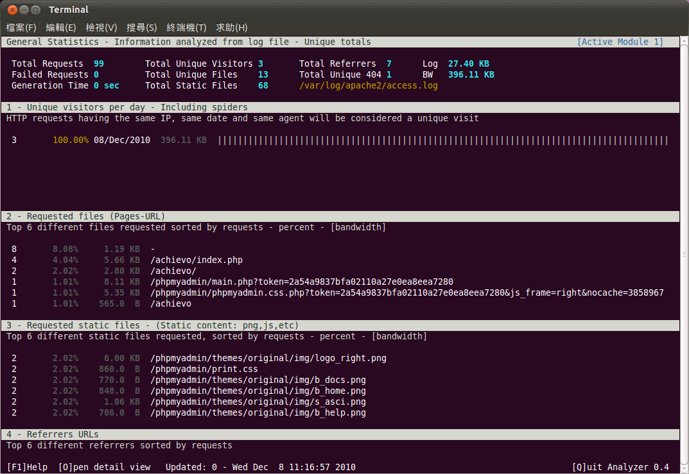
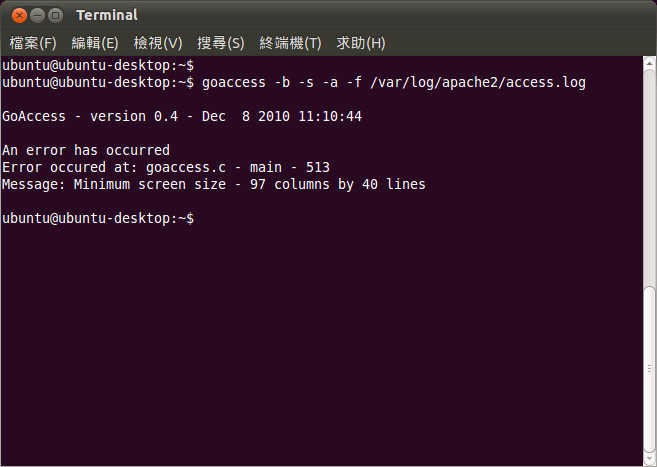
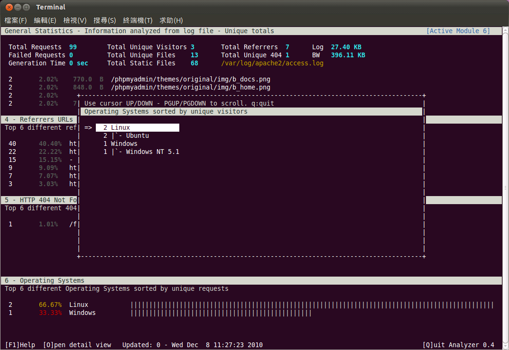
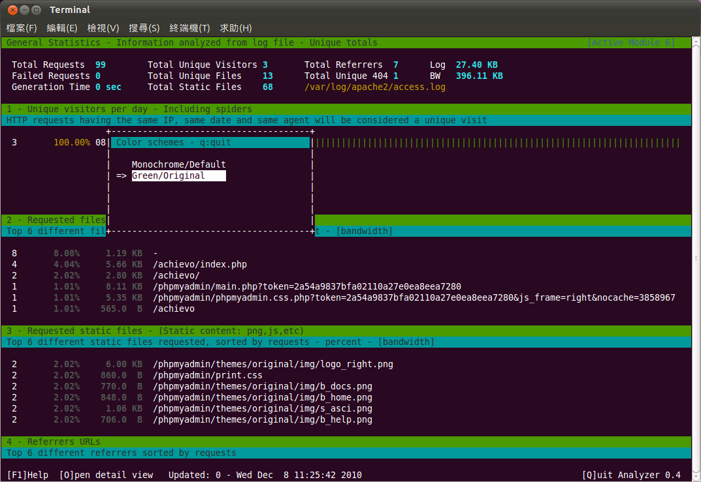

GoAccess，一個 Apache Log 的程式分析

簡介
如果因為任何理由，在 Linux 主機上要進行網頁伺服器的架設，相信大多數人都會直接選擇使用 Apache 這套網頁伺服器軟體。一方面這套網頁伺服器軟體的佔有率高，使用上比較穩定而不容易產生意料之外的問題；另一方面則是網路上可以搜尋到的相關文件非常多，甚至 Apache 官方網站中便有一個非常完整的文件系統，可以讓系統管理員在需要時進行查詢。而在架設網頁伺服器之後，接下來除了要建立網站的內容以外，通常大多數的系統管理員也會隨即安裝一些網站流量的統計工具。因為 Apache 本身雖然有非常完善的記錄檔功能，可以將伺服器發生的任何事件一一記載在記錄檔之中，但記錄檔畢竟不是相當容易直接由人類進行判讀的一種資料，有些時候很難直接從記錄檔所提供的資訊判斷出當時所發生的事件為何。再加上網站運作一段時間以後，記錄檔的內容與資料量都會大幅攀升，如果要在數量如此龐大的檔案中搜尋特定資料，有時候會給人大海撈針的感覺。透過網站流量的統計工具輔助，則可以先將記錄檔的內容進行分析，再依照事件相關的屬性加以分門別類，即可使用較為容易被人類閱讀的方式呈現網站流量的統計資料。
網站記錄檔的分析與統計工具可以輕易的在網路上找到許多相關的軟體，而這些軟體絕大多數都是以網頁方式呈現。或許是這些軟體的作者認為，既然已經架設了網頁伺服器，表示使用者一定有網頁空間可以放置這些統計後所產生的報表網頁。雖然這樣的想法並沒有錯，但是對於只想在第一時間查到網站相關的統計資料者而言，這樣的作法多少有些麻煩。因為這意味著使用者必須先找到一部可以執行瀏覽器的電腦，再利用此電腦瀏覽網站流量的統計資料。或許現在大多數的電腦都是採用圖形介面，所以問題不大。但如果使用者想要快速查詢到相關的統計資料，或是目前所使用的電腦只有文字終端機介面（例如 Ubuntu 的伺服器版本，預設情況下並未安裝圖形操作介面），便很難使用瀏覽器前往查詢網站統計資料的報表。
這樣的問題並非毫無解決之道，因為除了採用網頁方式呈現的統計報表之外，也有專門針對文字終端機介面所設計的網頁記錄檔分析軟體，例如本文所要介紹的 GoAccess 即為最好的範例之一。GoAccess 是一套採用文字終端機介面所設計的 Apache 記錄檔分析程式，本身利用 ncurses 程式庫進行開發，因此雖然使用的是文字介面，但在畫面呈現上仍然具有相當水準。由於 GoAccess 是以即時方式進行記錄檔的分析，並將最新的資料直接呈現在畫面上，因此如果系統管理員需要即時得知目前網頁伺服器相關的運作統計資料，便可以透過此工具程式進行查詢。而不必像其他統計軟體一樣，因為是採用分析記錄檔再產生網頁資訊的運作模式，因此如果要取得最新的資料，多半需要重新執行一次統計軟體，以便產生最新的報表。

▲ 圖1 GoAccess 的執行畫面
安裝 GoAccess 的注意事項
安裝 GoAccess 並不是一件非常困難的工作，對於已經非常熟練軟體安裝相關流程的系統管理員而言，只要注意幾個小細節便可以直接完成安裝動作。如果要直接以原始檔編譯的方式進行 GoAccess 的安裝，則必須先行檢查系統中是否有 GoAccess 所需要的程式庫套件。安裝 GoAccess 之前，系統上至少需要先完成 ncurses、GLib2 這二套程式庫的安裝，其中 GLib2 的版本只要大於 2.0.0 版即可。如果希望 GoAccess 可以直接從來源 IP 位址取得對方的地理位置，則可以安裝 GeoIP 程式庫。此程式庫並非必要安裝，因此如果對 GeoIP 的功能不感興趣，可以不需要安裝。安裝上述程式庫可以直接從原始檔編譯著手，但如果使用的 Linux 發行版本本身有套件管理機制，或許從套件管理系統中直接進行安裝會是比較容易的作法。以 Debian、Ubuntu 為例，直接使用 APT 安裝 libncurses5-dev、libglib2.0-dev 與 libgeoip-dev 這三個套件，即可同時完成 ncurses、GLib2 與 GeoIP 程式庫的安裝動作。如果使用的是 Red Hat、Fedora 或是 CentOS 這些發行版本，則可以利用 YUM 安裝 ncurses-devel、glib2-devel 與 GeoIP* （包含 GeoIP-data、GeoIP-devel）等套件。
安裝 GoAccess 時，一樣也可以使用套件管理的方式進行，如此一來可以減少一些等待編譯、設定的時間浪費。以 Debian 發行版本為例，在「/etc/apt/sources.list」之中加入一行「deb https://ftp.de.debian.org/debian sid main」，接著依序執行「sudo apt-get update」、「sudo apt-get install goaccess」即可進行安裝。Ubuntu 也可以使用相同的安裝方式，只是「/etc/apt/sources.list」檔案中要加入的網址必須變更為「deb https://ubuntu.mirror.cambrium.nl/ubuntu/ natty main universe」。至於 Red Hat、Fedora 等版本所使用的 RPM 格式，目前 GoAccess 的官方網站並未提供 RPM 格式，但是在網路上可以找到網友自行建立的 RPM 套件。例如「https://marco-ziesing.de/archives/101-goaccess-fur-fedora-13.html」這個網頁提供了一套 0.3.3 版的 GoAccess RPM 檔，如果不想從原始碼重新編譯，直接使用此 RPM 套件檔也是一個選擇。如果讀者有使用 Git 的習慣，亦可直接使用「git clone git://goaccess.git.sourceforge.net/gitroot/goaccess/goaccess」指令取得最新版本的 GoAccess。
GoAccess 的特色
GoAccess 與其他的記錄檔分析軟體最大的不同之處，在於 GoAccess 只能支援 Apache 的記錄檔格式。由於許多網頁伺服器（甚至是其他種類的伺服器軟體）也會使用 Apache 伺服器的記錄檔格式，因此並不能就此認定 GoAccess 只能處理 Apache 伺服器的記錄檔。只是 Apache 畢竟是較為知名的網頁伺服器軟體，因此 GoAccess 才會強調本身是一套 Apache 記錄檔的分析軟體。但如此一來，卻會造成部份使用者的誤解，誤以為 GoAccess 只能在網頁伺服器使用 Apache 的情況下使用。在處理記錄檔的時候，GoAccess 會先進行記錄檔的解析動作，接下來才會從這些已經經過解析的資料中收集需要的資訊，並且以文字終端機的介面加以呈現。由於 GoAccess 每一個畫面需要呈現的資訊較多，因此標準的 80 行 24 列的終端機介面，並無法順利執行 GoAccess。一般而言，至少需要將行數調整至 97 行以上，列數調整至 40 列以上，才能執行 GoAccess 進行記錄檔的分析動作。執行 GoAccess 並且收集到相關的資料之後，GoAccess 便會以報表的方式呈現在終端機的畫面之中，讓使用者直接以鍵盤熱鍵的方式進行操作。GoAccess 使用的熱鍵數量並不多，但如果不記得相關的按鍵定義，也可以直接從線上輔助訊息中取得鍵盤的使用方式，並不需要強行記憶相關的熱鍵設定為何。

▲圖2 終端機至少要有 97 行 40 列的解析度，才能執行 GoAccess
GoAccess 也是以報表的型式呈現資料統計後的結果，雖然使用的是文字介面，但因為畫面安排得當，所以並不會給人無法找到所需資料或報表的印象。GoAccess 提供的報表項目相當多元化，數量多達十數個，幾乎已經涵蓋了大多數網頁流量分析軟體所會提供的報表類別。統計報表包括基本的統計資訊、頻寬統計、最常前來拜訪的主機名單、最常被存取的檔案、圖片、Flash動畫等等各種資料。而像是參照位址（Referrer URL）、參照主機、訪客主機所使用的作業系統為何，還有當伺服器回應「404 Not Found」訊息時客戶端所使用的網址為何，也會一併被記載下來，這可以協助管理員進行網站的內容檢查，確認網站內容中是否使用了不正確的連結而造成使用者操作錯誤的情況發生。除此之外，客戶端所使用的瀏覽器種類也可以被統計出來，這可以讓網站設計人員了解目前瀏覽器大致的使用潮流，並依據此項統計資訊加以修改網站的設計走向，讓網站可以符合大多數人的使用習慣。而不是只針對某種特定的瀏覽器進行最佳化，其他的瀏覽器則置之不理。

▲圖3 GoAccess 可以針對作業系統或瀏覽器進行統計
如果網站已經放置到公開的網路中，一段時間之後勢必會有搜尋引擎的機器人前來擷取資料。如果想查看關於這些搜尋引擎機器人的統計資訊，亦可在 GoAccess 的統計報表中取得相關訊息。由於搜尋引擎的機器人會在收集到資料後，將網站相關的資訊建立在搜尋引擎的資料庫之中，因此在網站運作一定的時間之後，便會開始出現有來訪者是經由搜尋引擎而找到自己網站的情況。如果希望了解大多數人在搜尋引擎是以何種關鍵字查到自己的網站，可以利用 GoAccess 的關鍵字統計報表進行了解。得知網站相關的關鍵字統計資訊，便能依照來訪者的需求，設計更多可能引起來訪者興趣的網頁，以便提高回訪率與停留時間。
若系統管理員想得知最常前來存取網頁伺服器的主機位址為何，則可以利用 GoAccess 的主機統計資訊進行查詢。主機統計資訊會依照來源主機前來存取網頁的次數加以排序，讓系統管理員可以很快了解大多數前來存取網站的主機網址為何。如果有異常的存取現象出現，也可以利用此功能進行了解。如果安裝 GoAccess 時有使用 GeoIP 程式庫，甚至還可以查出來源主機的所在位置，這在特定情況下也是相當有用的統計資料。除了這些來源主機相關的資料以外，GoAccess 也可以進行 HTTP 狀態碼的統計，讓系統管理員得知網站最常回應的 HTTP 狀態碼為何。如果發現某一種狀態碼經常出現，亦可進行進一步的查詢，以確認網頁伺服器本身是否有問題發生。
雖然 GoAccess 是以文字介面進行設計，但仍然在使用介面上稍微下了一點功夫。如果覺得預設的畫面有些單調，亦可透過切換顏色配置的方式選擇另一種不同的顯示模式。雖然礙於文字介面的因素，導致 GoAccess 無法提供太多的顏色配置方式，但仍然不失為一個可以提供使用者介面一些變化的選擇。只是 GoAccess 畢竟強調的還是本身的分析能力，所以大多數人恐怕對於 GoAccess 是否可以改變顏色配置並不會太過在意。

▲圖4 GoAccess 的顏色配置也可以加以變更，但預設可以選擇的配置項目並不多
GoAccess 支援的記錄檔格式
Apache 網頁伺服器主要使用二種記錄檔格式，分別是 Common Log Format (CLF) 與 Combined Log Format (ELF)。二者記錄檔的格式稍有差異，也都有一定數量的愛好者。但無論系統管理員採用的是何種記錄檔格式，基本上 GoAccess 都可以進行解譯與分析，不會有任何問題。如果網頁伺服器有設定要以虛擬主機的方式運行，GoAccess 也能正確處理。此外，如果其他網頁伺服器也能支援以 Apache 的記錄檔格式進行事件的記錄動作，理論上 GoAccess 也能加以解讀。例如 GoAccess 的官方網站便提到 Nginx 這種 HTTP 伺服器軟體，如果將記錄檔格式設定為 Apache 的格式，即可使用 GoAccess 作為記錄檔的分析工具。有些記錄檔分析程式可能是因為設計上的考量不周，因此無法處理過大的記錄檔，或是處理到一半會發生問題。但 GoAccess 本身並沒有限制記錄檔的容量上限，基本上只要磁碟空間足以讓網頁伺服器繼續寫入記錄檔的資料，GoAccess 便能持續進行處理。
GoAccess 的執行速度
由於執行網頁伺服器的主機對於系統效能都非常敏感，尤其是大型網站的使用情況下更是如此，所以記錄檔分析軟體的運行效率，也就成了許多人在採用相關軟體時一個主要的考量重點。根據 GoAccess 官方網站的說法，如果使用 AMD Sempron 2.31GHz 的處理器，搭配 2GB 的系統記憶體，則在開啟 GoAccess 所有功能的情況下，GoAccess 每秒鐘可以處理十萬行的記錄檔資料。如果僅使用預設的功能，則 GoAccess 的處理效率會稍有成長，來到每秒鐘十萬八千行的水準。當然 GoAccess 的運作速度會依照系統硬體的不同而有所增減，一般來說，如果 CPU 的時脈越高、記憶體的容量越大，則 GoAccess 在處理記錄檔的時候，將會有更佳的表現。結語
雖然 GoAccess 已經足以應付大多數的網頁記錄檔分析工作，但開發團隊並未停止研發腳步，仍然持續構思可以增加的新功能。例如對於 UTF-8 編碼的更佳支援、可以支援 IPv6 的分析，甚至增加更多執行時的選項，還有讓執行效能更進一步等等。可以想像的是，在不久的將來，GoAccess 在功能上將會更加完善，將來甚至有可能成為所有網頁伺服器管理員必裝的管理工具之一。作者簡介
翁卓立逢甲大學資訊工程學系、台灣科技大學電子所畢業，目前擔任韌體研發工作，主要使用 Embedded Linux 進行產品開發。著有「Linux 進化特區：Ubuntu 10.04 從入門到精通」等書。